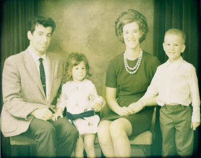

Bio
I am a self-taught furniture-maker living in the Pacific Northwest.
Though officially untrained, tools did fill my childhood. My father switched to carpentry when I was in Grade 1, after coming to Canada as a Swiss pastry chef. Our family was always, it seemed, either renovating old houses or building new ones. Several years of carpentry work followed my own high school graduation.
An interest in art and design was sparked by two years of working and traveling in and around Europe in my early 20's. A more serious pursuit of furniture-making began after completing a BA at Dalhousie in Halifax in the mid-1990s.
Seasonal self-employment in British Columbia's forestry industry during those first years paid for the shop and the tools and allowed me several months each winter to work on the skills.
Inspiration comes from all the diverse manifestations of human spirit, enterprise, and ingenuity that are evident in everything around us. Also from my parents and my partner, who have always been hands-on kind of folk.